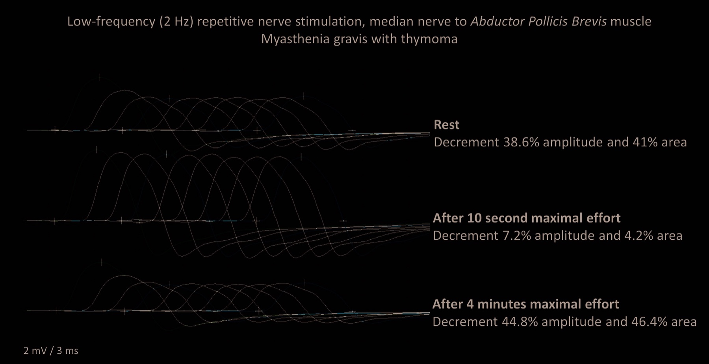

Pergunta central
ENMG decremental e os anticorpos
O que a estimulação mostra quando o músculo cansa — e qual anticorpo é a rotina?
ENMG da placa
Diagnóstico instrumental da placa: eletroneuromiografia (ENMG). Na trilha de fraqueza, a ENMG avalia nervo, placa e músculo conforme a topografia; na MG, o alvo é a placa motora.
Padrão decremental
Achado ENMG clássico da MG: potencial / resposta decremental.
Técnica conceitual: estímulo/registro no músculo → observa-se a amplitude da onda motora. Início com amplitude maior; com uso/estimulação repetitiva e fatigabilidade, a amplitude cai / achata → padrão decremental.
O decremental não é patognomônico absoluto de MG isolada (outras doenças de placa podem apresentar), mas é o grande achado de placa; a MG é quem mais "faz" esse padrão no ensino prático.

Kouyoumdjian JA, Estephan EP. Arq Neuropsiquiatr 2023. Licensed under CC BY 4.0. Source: PMC10756823 · DOI 10.1055/s-0043-1777749
Amplitude ↓
A onda começa maior e cai com o uso repetido. É o espelho eletrofisiológico da fatigabilidade: 38,6% de decremento em repouso; recuperação efêmera pós-esforço 10 s; exaustão pós-esforço 4 min (44,8%).
Anti-AChR ~90%
Como doença autoimune, solicita-se o anticorpo anti–receptor de acetilcolina (anti-AChR). Presente em cerca de 90% dos casos.
O grande anticorpo de rotina permanece o anti-AChR.
Anti-MuSK (nicho, só generalizada)
Existe também o anti-MuSK: presente em cerca de 50% — no nicho em que se aplica (tipicamente pacientes sem anti-AChR, forma generalizada) — e apenas na forma generalizada.
Pegadinha: Anti-MuSK não aparece na forma ocular pura.
Anti-MuSK atua de forma indireta: desorganiza proteína fundamental à arquitetura do AChR → o receptor perde arquitetura e deixa de funcionar bem; em última análise, efeito "anti-receptor" por outra via.
Anticorpo × forma clínica
| Anticorpo | Frequência | Forma clínica |
|---|---|---|
| Anti-AChR | ~90% | Grande marcador de rotina |
| Anti-MuSK | ~50% (nicho AChR−) | Só generalizada; fora da ocular pura |
4–5 ondas sucessivas com amplitude decrescente; rótulo "decremental".
Quiz
Q1. O padrão ENMG clássico da MG é:
Gabarito: B. Amplitude cai com estímulos repetidos = espelho eletrofisiológico da fatigabilidade. (A) é LEMS.
Q2. Anti-MuSK na forma ocular pura:
Gabarito: B. Anti-MuSK não aparece na forma ocular pura. Ele é do nicho AChR− generalizada.
Q3. Anti-AChR ~90% refere-se, em prova, sobretudo a:
Gabarito: B. ~90% = teto da forma generalizada (PCDT 2022: ~85–90%). Ocular pura cai para ~50–55%.